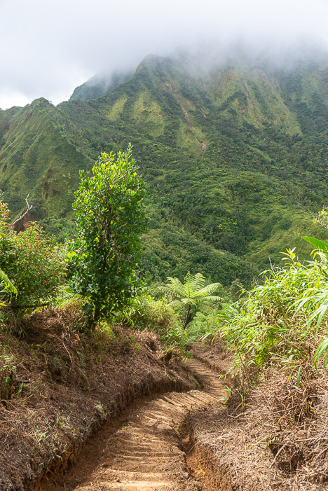
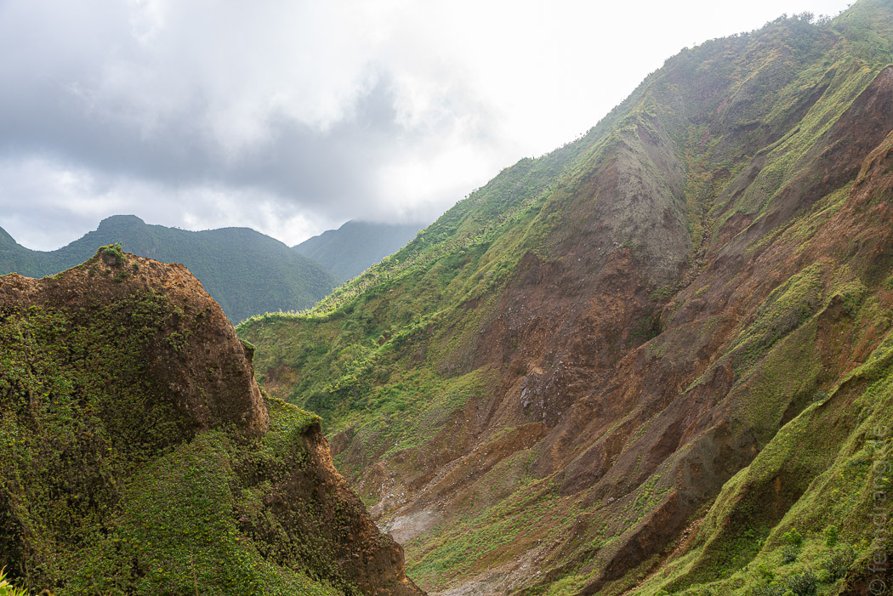
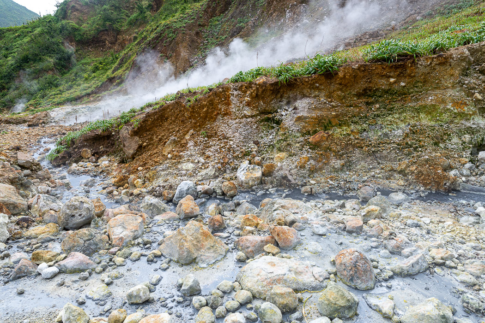
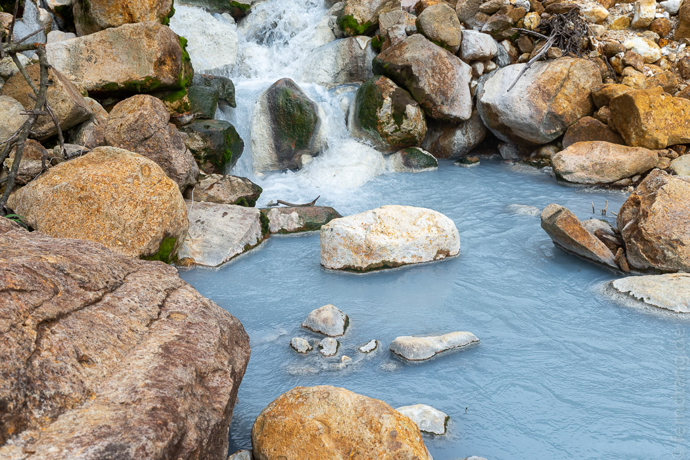
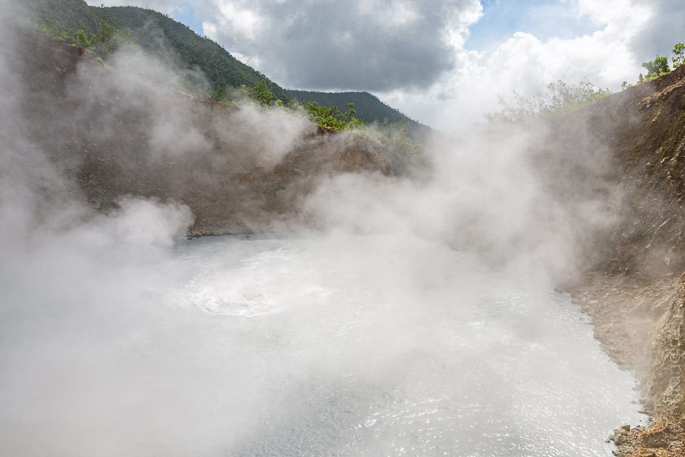
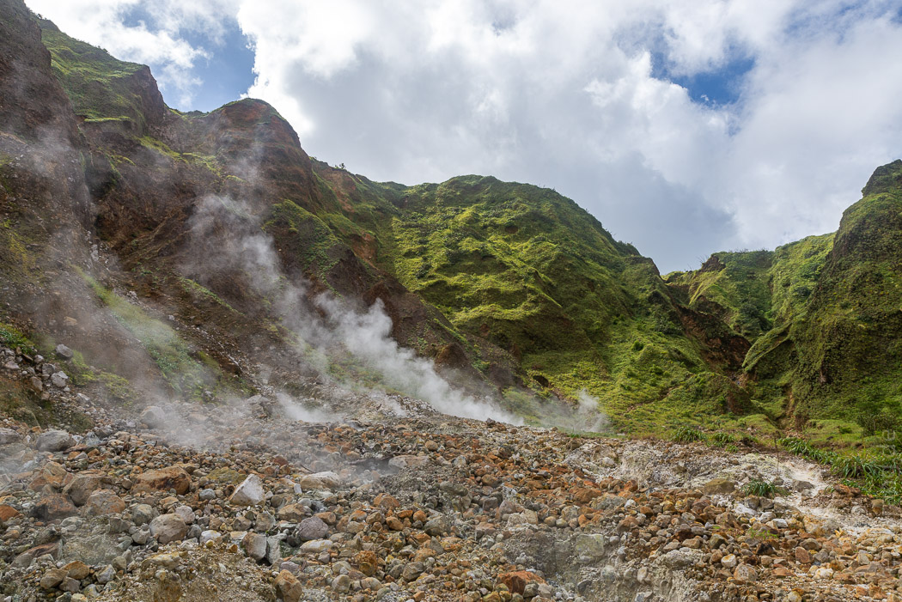
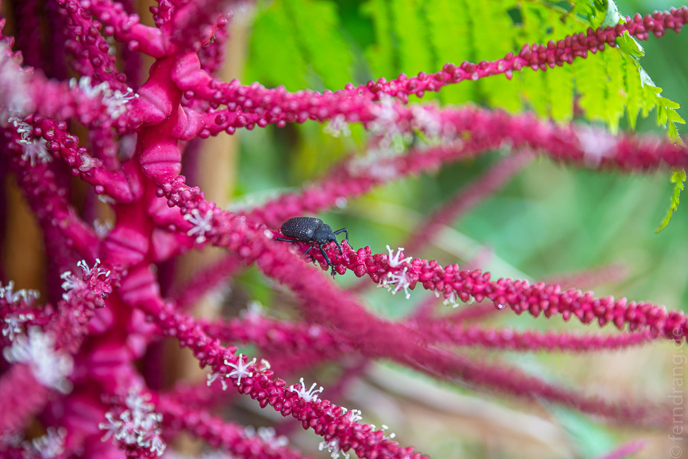

Die wahrscheinlich anstrengenste Wanderung auf Dominica führt zum Boiling Lake.
Dieses vulkanische Naturphänomen ist ein kleiner See, der sich auf einer Fulmerole gebildet hat und bei etwa 90 Grad vor sich hinkocht. Aber schon der Weg war höllisch. Der Pfad führte überflüssigerweise über mehrere Grade und Gipfel, damit man besonders viele Höhenmeter machen kann. Dahinter ging es auf schlammigen Pfaden steil bergab ins treffend benannte Valley of Devastation. Dort ist nur karger Bewuchs, weil die Flüsse schwefelhaltig und heiß sind. Das Wasser ist mal schlierig schwarz, schlammig grau oder sprudelnd gelb.
  Der kochende See kochte leise vor sich hin, als wir kamen. Dichter Dampf stieg aus dem kleinen Krater und ließ nur selten einen Blick auf die blubbernde, brodelnde Mitte zu.
Der Rückweg war noch anstrengender als der Hinweg. Den beißenden Schwefelgeruch in der Nase, den eigenen Schweiß in den Augen und mit immer weniger Wasser haben wir uns aus dem Tal der Verwüstung herausgekämpft.
 Nach sechs Stunden waren wir wieder beim Einstiegspunkt der Wanderung, wo auch die Titou Gorge liegt. Zu unserer Überraschung hatte das Kreuzfartschiff vor der Küste seine Gäste abgeworfen, und wir fanden uns in Mitten von Hundert schnatternden Touristen wieder, die lautstark ihrem angeleiteten Vergnügen nachgingen. Wir haben uns mit einer kalten Cola hingesetzt und gewartet bis der Sturm vorrüber war. Eine halbe Stunde später gingen die Hupsignale der Busse und wir hatten den Ort wieder für uns.
Die Titou Gorge ist eine zehn Meter tiefe Schlucht, durch die ein eiskaltes Flüsschen fließt. Am Ende sprudelt ein Mini-Wasserfall. Mit einem geliehenen Gummireifen kann man zwischen den senkrechten Wänden paddeln, die teils keinen Meter weit auseinander stehen und sich dabei die Gänsehaut seines Lebens holen.